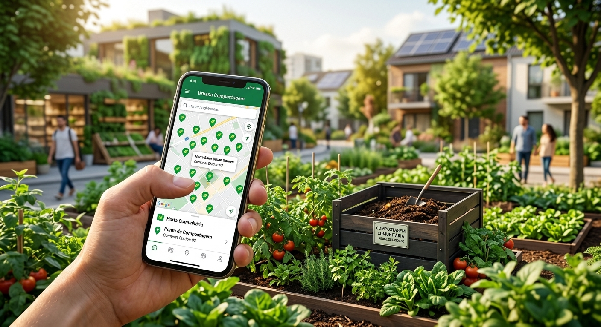
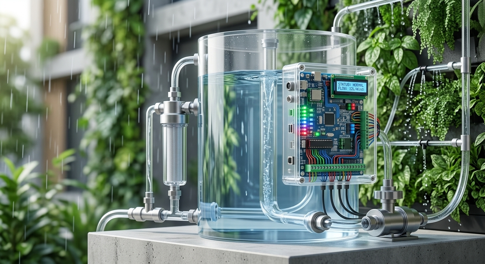
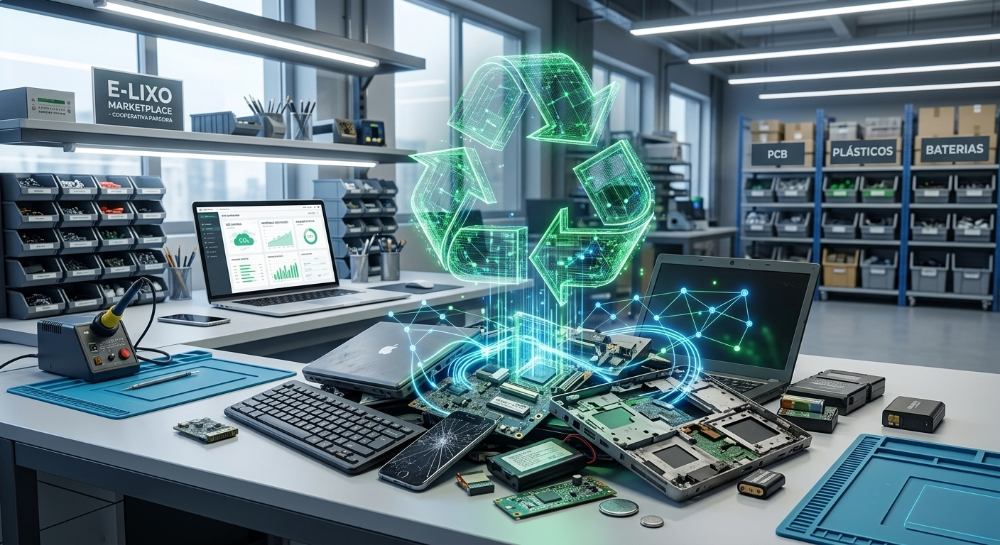

Descrição: Aplicativo que conecta moradores locais a pontos comunitários de compostagem orgânica e hortas urbanas.
Benefícios: Redução da quantidade de lixo orgânico em aterros sanitários e incentivo à produção local de alimentos livres de agrotóxicos.

Descrição: Automação baseada em hardware livre (como Arduino ou Raspberry Pi) que monitora reservatórios de água pluvial e faz a filtragem e distribuição para limpeza e irrigação.
Benefícios: Economia no consumo de água potável em prédios residenciais e comerciais.

Descrição: Portal web focado em conectar consumidores que possuem descartes eletrônicos (computadores, celulares, baterias) a cooperativas e recicladores homologados.
Benefícios: Destinação correta de resíduos altamente poluentes e fomento da economia circular de componentes tecnológicos.